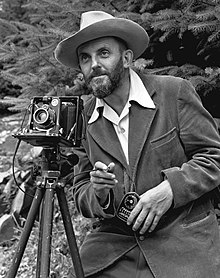
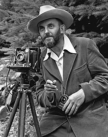

MY FAOURITE HOBBY
PHOTOGRAPHY

Photography is an art and it just captures the beauty of the moment in all its best. Though it does not require great skills, it does require an understanding to capture wonderful shots.Photography is a vast subject, there are so many subjects to choose from on which to master and which one would enjoy. I love to click mostly the natural ones or the ones that gives me a perfect satisfaction of where I am in. To get good shots, one needs to understand a few concepts of photography like lighting techniques, backgrounds, arrangements and so on, so that when the outcome is done, you get a wonderful shot. Practicing is another method to get your shots to the perfect, the more you practice on your choice of interest, the more better your shots would become. In order to make my shots good , I did take up short courses to learn in detail so that I understand how to take good shots and great snaps that look natural and wonderful.Photography has elevated my imagination senses and also patience level as I have to wait long for a good and right capture. Photography is something that develops over a period of time and with a good imagination sense and right kind of equipment, it is quite easy to capture those wonderful and cherished moments of life, which could never be bought back in reality.
A good photographer would always be in search of good sceneries or events to capture good moments and I am happy to be one among them. I just love shooting, be it outdoor or indoor as I have developed the skill through years of practice.Photography is something that just does not happen overnight. One has to devote time and develop patience and learn the art of good photography. The more I learn, the more I love it and this is one hobby that I am truly in love with and that which I enjoy the most.
 
